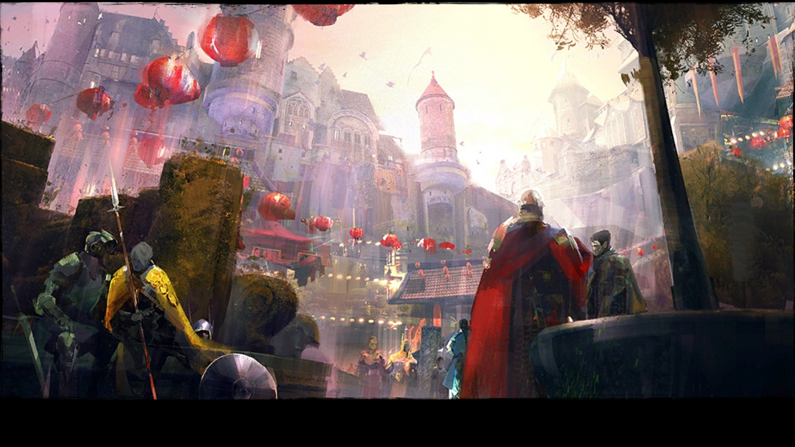

Newsy | Eventy Cykliczne
Lunar New Year 2018
W związku z rozpoczęciem nowego roku w Chinach (tym razem jest to rok psa) w grze czeka na nas po raz kolejny cykliczny event – Lunar New Year. Zabawa zaczęła się 6 lutego i potrwa do 22 lutego. Ponownie powraca Dragin Bash Arena, Lucky Envelopes, oraz zmieniony wystrój Divinity Reach. Nowością jest race po całym mieście z wykorzystaniem mountów – Ci, którzy nie kupili dodatku nie będą jednak poszkodowani. Gra oferuje bowiem możliwośc wypożyczenia mounta na czas zabawy za niewielką opłatą.
Na szczególną uwagę zasługują koperty, które możemy kupić w cenie 1g (limit 16/dzień). Jest to okazja do łatwego zarobku – sprzedając je na trading poście dostaniemy więcej. Można też zaryzykować i otworzyć, dużej straty nie odnotujemy (minimalny zwrot oscyluje w okolicach 14g), ale jest to działanie generalnie średnio opłacalne. Opcja ze sprzedażą daje nam niemal pewny zysk (koperty schodzą bardzo szybko). Kolejną atrakcją jest możliwość zrobienia egzotycznego plecaka, który da nam dwa skiny (rare i exotic), oraz nowe achievementy. Receptura do znalezienia tutaj.